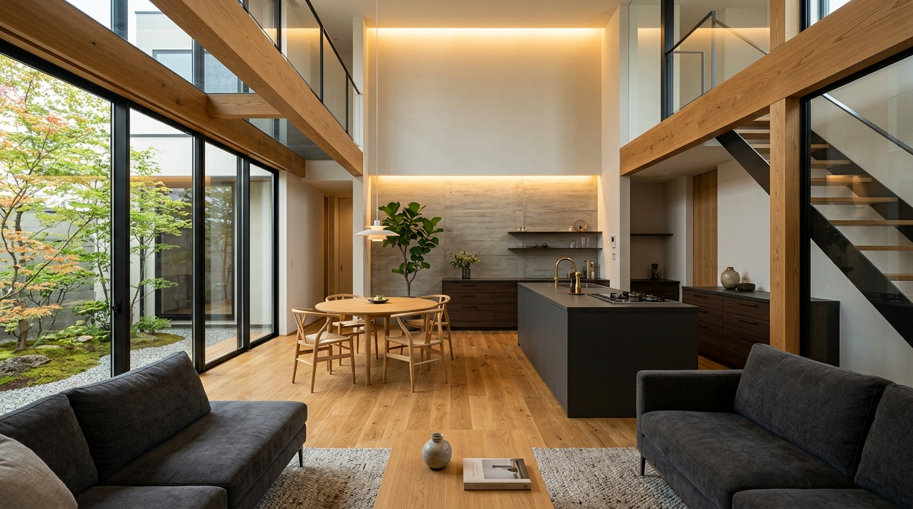

PROJECT #01
● Active / Ready
Residential Concierge LP
すまいと（sumaito）
住宅・工務店紹介
愛媛エリア特化
公式LINE相談誘導
下層ページ完備
愛媛で理想の住まいを建てる施主と優良工務店・ハウスメーカーを中立につなぐ住宅相談サービスLP。カナマルHOUSEをリファレンスに、4つの提供価値枠、無料の仕組み、ご紹介ステップ（丸型アイコン）の枠組みを実装。
Stack: HTML5 / Tailwind / JS
Client: sumaito (愛媛)